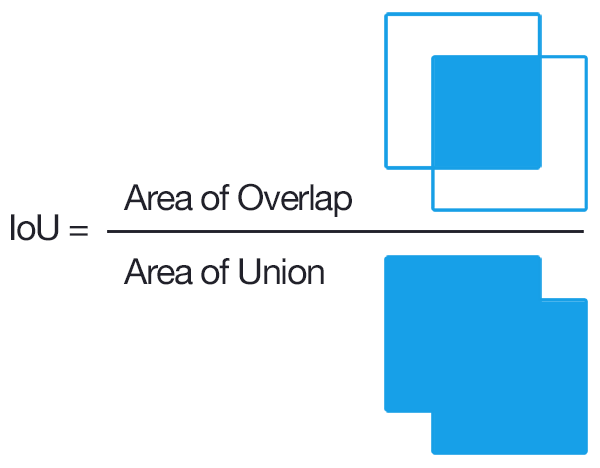

Simplified Approach to Implementing RAG on a local machine
Introduction
One of the interesting applications of Generative AI is searching for information within your own documents which is termed as Retrieval Augemented Generation or RAG in short. There are many different combinations and software to setup a RAG on a local system. the ability to perform RAG entirely on a local system looks to be slightly more challenging. In this article, we would like to share on some of the more simple and straightforward ways RAG can be implemented on a local machine without the need to call an API over the internet.
Most straightforward - Install directly from NVIDIA
The most straightforward way to experiment chatting with your documents is with the NVIDIA tool ChatRTX demo app which can be downloaded from the NVIDIA website and installed directly. More details about the tool can be found at https://www.nvidia.com/en-us/ai-on-rtx/chat-with-rtx-generative-ai/
High Level illustration of RAG

There are many useful blogs and resources explaning about Retrieval Augmented Generation (RAG) and this is my attempt to explain it in simple terms with the basic components.
- In the first step, relevant text is extracted and consolidated from the source documents.
- These documents are broken up into chunks, logical smaller pieces of information.
- Each of the text in the chunk is transformed into an embedding which is essentially representing the text in numbers and is usually in a matrix format.
- We get the query text.
- The query text is also transformed into an embedding and is compared against the collection of document embeddings to find the most relevant chunks of text.
- The query, together with the relevant chunks of text are fed into a Large Language Model as part of the context to output a coherent response.
Similarity matching of sentences
For a retrieval augemented generation, there will be a base collection of information sources which can come from documents, online faqs, text information in a database etc. The documet will be broken up into smaller chunks and an embedding will be generated for each chunk. The query will then be compared against each chunk of information and find the top number of most similar results.
Basic similarity using Jacquard Similarity
Taking inspiration for an article on the basics of RAG https://learnbybuilding.ai/tutorials/rag-from-scratch, one of the common methods of measuring similarity is using Jacquard similiarity which is employed for the evaluation of object detection algorithms. The image below shows a graphical overview of how the jacquard similarity coefficient is calculated.


First we have a collection of sentences to from a corpus. In our simple example, the corpus consist of four sentences with the first three having the same meaning, being the paraphrase of each other while the last sentence has the opposite meaning to the first sentence.
corpus_of_documents = [
"The forecast predicts heavy rain for the entire week.",
"A week of intense rainfall is expected according to the weather report.",
"The weather outlook indicates a week-long period of intense rainfall.",
"The weather report anticipates dry weather throughout the week."
]Next we define the simple functions to calculate the coefficients and find the closest sentence.
def jaccard_similarity(query, document):
query = query.lower().split(" ")
document = document.lower().split(" ")
intersection = set(query).intersection(set(document))
union = set(query).union(set(document))
return len(intersection)/len(union)
def return_response(query, corpus):
similarities = []
for doc in corpus:
similarity = jaccard_similarity(user_input, doc)
similarities.append(similarity)
return corpus_of_documents[similarities.index(max(similarities))]We compare the sentences to a sample query: “The forecast predicts dry weather for the week.”. As we can see, based on the similarity using jacquard coefficent, it is not so useful for finding sentences with the same meaning since the sentence output is the opposite of the query. It is more about finding sentences with the highest proportion of words in common.
Similarity matching based on sentence embedding
For the concept of embedding, I found that Jeremy Howard explains it best in his free course and the link to the lesson can be found here: https://course.fast.ai/Lessons/lesson7.html. In his lecture, he explains about embedding through the recommendation systems technique, collaborative filtering, which is about creating numeric representations of users and movies based on their interactions. In a similar manner, words and their positions can be transformed into a numeric representation. More details about sentence embedding can be found in https://docs.cohere.com/docs/text-embeddings
Using embeddings, the matching of similar sentences based on their meanings become more accurate.
Implementing Language Models Locally
Further learning
- Resource on prompt engineering: https://www.promptingguide.ai/
Additional Ideas
- Compare how is RAG search different from the traditional indexing and search